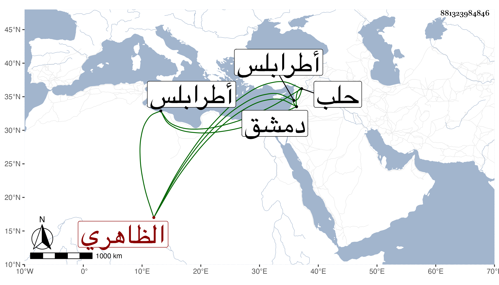

0902Sakhawi.DawLamic.ITO20230111-ara1.EIS1600.881323984846
Biography ID: 881323984846
739
قصروه من تمراز الظاهري برقوق . ممن تأمر عشرة الأيام المؤيدية بعد خطوب وحروب قاساها ثم قدمه ططر ثم عمله رأس نوبة النوب ثم عمله الأشرف في سنة خمس وعشرين أمير آخور كبير ثم أعطاه في التي بعدها نيابة طرابلس ثم نقله إلى نيابة حلب في سنة ثلاثين ثم نقله في سنة سبع وثلاثين منها إلى دمشق بعد جارقطلي واستمر حتى مات بها في ربيع الآخر سنة تسع وثلاثين ، وكان ضخما عارفا عاقلا شجاعا مقداما مديرا سيوسا صاحب دهاء ومكر مع شكالة وحشمة وبهاء ووقار وهو أحد الأسباب في سلطنة الأشرف . ذكره ابن خطيب الناصرية وغيره بل أورده شيخنا في إنبائه باختصار في سنة تسع وكذا في سنة أربعين سهوا ، وذكره العيني فقال أنه لم يكن مشكورا وخلف عليه جملة ديون للناس أنه ترك من النقد والخيول والقماش وسائر الأصناف ما قيمته ستمائة ألف دينار جمعها من حرام وسماه في الموضعين خسرو فوهم وله ذكر في فاطمة ابنة قانباي .
